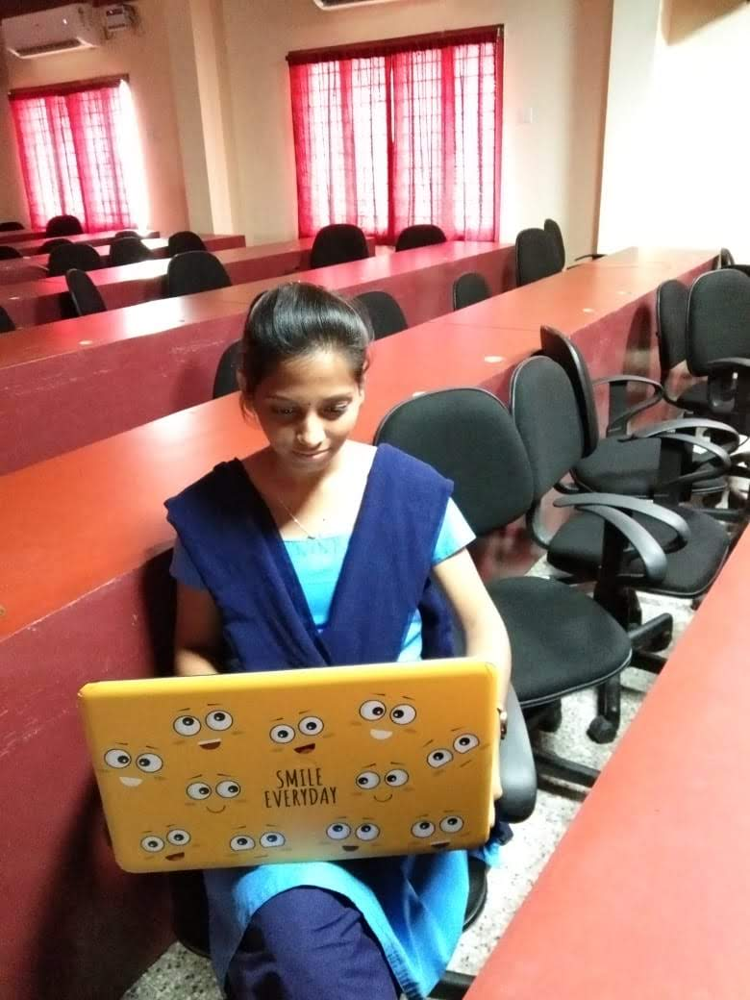

<!DOCTYPE html>
<html lang="en" dir="ltr">
  <head>
    <meta charset="utf-8">
    <meta name="viewport" content="width=device-width,initial-scale=1">
    <title>::Resume:</title>
    <link rel="stylesheet" href="style.css">
  </head>
  <body>
    <div class="main">
  <!--  <div class="left">
      <div class="left1">
        
        <h2>Janaki</h2>
        <h3>QIS</h3>
        <hr>
        <div class="left2">
          <p>D/o:Ramesh</p>
          <p>Email:gundajanaki123@gmail.com</p>
          <p>Phone:9703950988</p>
          <p>Narayanapuram,
          Dachepalli,
          Guntur</p>
        </div>
      </div>-->
     <!-- <div class="right">
       <h1>CAREER OBJECTIVE<h1>
        <h4> To obtain a challenging and rewarding
          software engineer position where a degree
          in computer engineering and 3 years of
          experience as a programmer will be fully
          utilized.<hr>
        <h2>EDUCATIONAL QUALIFICATIONS</h2>
        <h3>B.tech:78%<br>
        Intermediate:94.5%<br>
      SSC:9.3</h3><hr>
        <h2>TECHNICAL SKILLS</h2>
        <h4>Languages known:c,html,java<br>
          Tools:Ms.office<br>
          OS:Windows,Linux.<hr>
        <h2>ACADEMIC PROFILE
        <h3>B.tech:</h3><p>Qis college of engineering and Technology,
            Vengamukkalapalem,Ongole.</p>
        <h3>Intermediate:</h3><p>Sri chaithanya Jr. college,
            Guntur.</p>
        <h3>SSC:</h3><p>Noble E.M High School,Narayanapuram,
            Dachepalli(md),Guntur(dt).
            <hr>
            <h2>HOBBIES</h2>
            <p>Listening Music,
            Reading books,
          Sleeping</p>

      </div>


    </div> -->
    <script type="text/javascript" src="resume.js">

    </script>
  </body>
</html>
